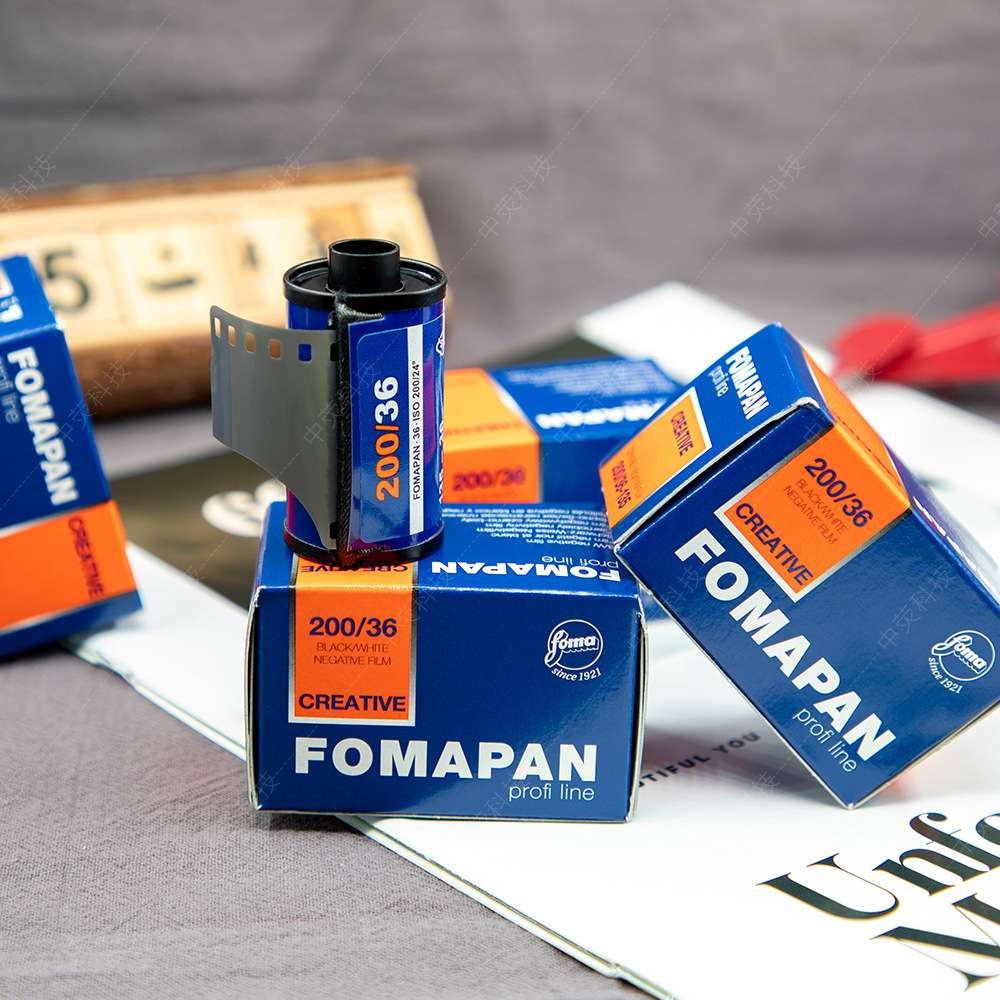

使用感受：
以前拍胶卷时从没用过这款福马200度黑白胶卷。那时我喜欢用国产公元牌，但众所周知，现在公元胶卷早就不生产了。
这款胶卷属于平价经济型胶卷，这类胶卷一直是我的心头好，虽然相对便宜，但出片质量其实也很高，很具性价比。
对我来说，福马黑白胶卷是我的常用胶卷之一，反差层次都很好，颗粒控制得也不错，能满足我的拍摄要求。
Published Work
主要参数：
- 综述：Fomapan 200 Creative是捷克百年感光材料厂商Foma推出的中速全色黑白负片，是该系列中兼顾性价比与创作灵活性的核心型号。
- 标称感光度：ISO 200/24°，实际可稳定覆盖EI 100到EI 800的曝光范围，无需调整冲洗时长。
- 分辨率：110线/毫米，在同价位胶片中属于第一梯队水平。
- 光谱特性：全色感光，对可见光全波段敏感，适配日常日光与人工光源场景。
- 片基差异：135版本采用0.125毫米灰蓝色三醋酸纤维素片基；120与大画幅页片采用0.1毫米/0.175毫米高强度聚酯片基。
- 乳剂技术：采用现代扁平晶体银盐技术，颗粒细腻，灰阶过渡层次丰富，反差表现适中。
- 冲洗兼容性：可适配D-76、HC-110、Rodinal、XTOL等几乎所有主流黑白显影液，新手也容易把控出片效果。
- 倒易律特性：弱光长曝光下存在典型的倒易律失效特征，曝光时长超过10秒时需额外补偿曝光量。
- 防光晕设计：片基背面自带专用防光晕背层，在常规显影、定影流程中会自然溶解褪色。
- 未开封存储：需置于5-25℃、相对湿度40%-60%的阴凉干燥环境，远离有害气体与电离辐射。
- 冷藏/冷冻后回温：冷藏存放的胶片需提前取出回温约2小时，冷冻存放的需回温约6小时再开封使用，避免结露损伤乳剂。
- 推荐场景：城市街拍、人文纪实、日常人像、普通风光拍摄，低光环境下也能获得稳定的出片效果。